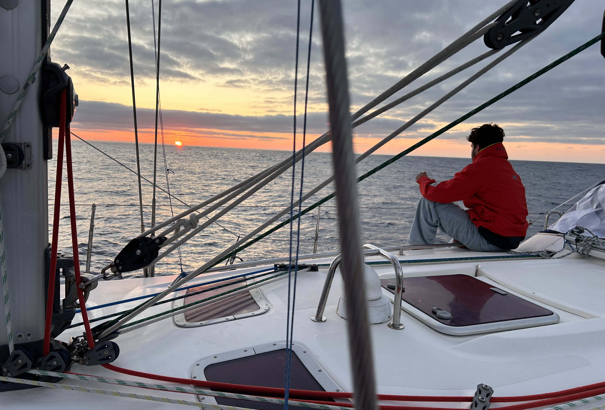
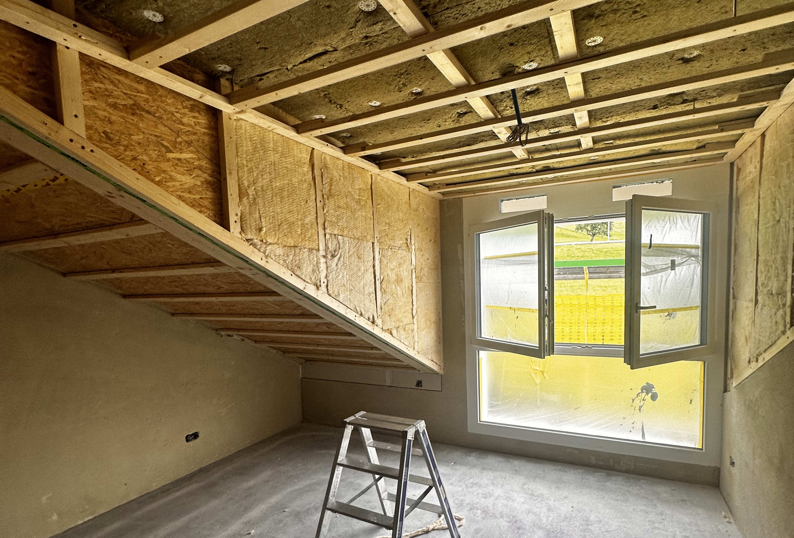

Im Während meines Zivildienstes an der ETH Zürich erstellte ich 3D-Modelle von Insekten mittels Fotogrammetrie. Dazu wurden hochauflösende Fotos der Insekten aufgenommen und mit Metashape zu präzisen 3D-Modellen zusammengesetzt. In der Nachbearbeitung optimierte ich die Geometrie und Texturen mit Meshmixer, Affinity Photo und Photoshop, bevor die finalen Modelle in Blender für wissenschaftliche Zwecke oder Ausstellungen im Museum für Gestaltung aufbereitet wurden. Diese Arbeit ermöglichte es mir, meine Fähigkeiten in der digitalen 3D-Modellierung weiterzuentwickeln und zur wissenschaftlichen Dokumentation beizutragen.

Bei diesem Projekt wurde eine umfassende Sanierung einer Wohnung in einem Terrassenhaus in Wollerau realisiert. Im Rahmen der Planung übernahm ich die zeichnerische und koordinative Umsetzung des Projekts und begleitete die Ausführung als Junior Bauleiter. Neben der Modernisierung der gesamten Wohnung war ein zentrales Element der Umbauarbeiten der Neubau eines Wintergartens, der harmonisch in die bestehende Architektur integriert wurde. Die Herausforderung lag in der präzisen Abstimmung zwischen den Gewerken sowie der technischen Umsetzung des Wintergartens, um höchsten Wohnkomfort und eine optimale Nutzung der Terrassenfläche zu gewährleisten.

Das Modell stellt eine Villa mit drei Wohnparteien in Wollerau dar, die einen beeindruckenden Seeblick bietet. Der Entwurf wurde vollständig aus Kartonschaumplatten gebaut, was dem Modell eine präzise und strukturierte Ästhetik verleiht. Die Villa ist so gestaltet, dass jede der drei Wohneinheiten optimal von der Aussicht profitiert, während moderne Architektur mit funktionalen Wohnräumen kombiniert wird. Das Modell vermittelt eine klare Vorstellung der Raumaufteilung und des harmonischen Zusammenspiels von Natur und Architektur.“

Ich konstruiere und gestalte praktische Gegenstände, die meinen Alltag erleichtern und funktionale Lösungen für spezifische Bedürfnisse bieten. Dabei kommt mein handwerkliches und planerisches Geschick zum Einsatz, um durchdachte und langlebige Objekte zu schaffen. Ich arbeite mit unterschiedlichen Materialien wie Metall und Holz und nutze meinen 3D-Drucker, um präzise Bauteile und individuelle Designs zu realisieren. Durch die Kombination klassischer Handwerksmethoden mit modernen Fertigungstechniken entwickle ich maßgeschneiderte Lösungen, die sowohl funktional als auch ästhetisch ansprechend sind.

Segeln ist für mich weit mehr als nur ein Hobby – es ist eine Leidenschaft, die mir Freiheit und Ruhe bringt. Ob auf dem Meer oder auf dem See, ich finde immer wieder eine tiefe Verbindung zur Natur und geniesse das Gefühl des Windes in den Segeln und die Herausforderung, mich mit den Elementen auseinanderzusetzen. Besonders auf meinem kleinen Segelboot auf dem Zürichsee verbringe ich viel Zeit, nicht nur beim Segeln, sondern auch bei der handwerklichen Arbeit, um mein Boot zu optimieren und instand zu halten. Diese Mischung aus Technik, Handwerk und Natur bietet mir einen einzigartigen Ausgleich zum Alltag.

Nach meiner Ausbildung sammelte ich wertvolle Erfahrungen im handwerklichen Bereich als Heizungsinstallateur und Zimmermann. Besonders die praktische Arbeit mit Holz hat mir viel Freude bereitet, da sie meine kreativen und handwerklichen Fähigkeiten herausforderte. Während meiner Tätigkeiten konnte ich durch die Zusammenarbeit mit erfahrenen Kollegen viele neue Techniken und praktische Kenntnisse erlernen, die mir in meiner Ausbildung nicht vermittelt wurden. Diese Erfahrungen haben mein handwerkliches Verständnis und meine Fertigkeiten deutlich erweitert.